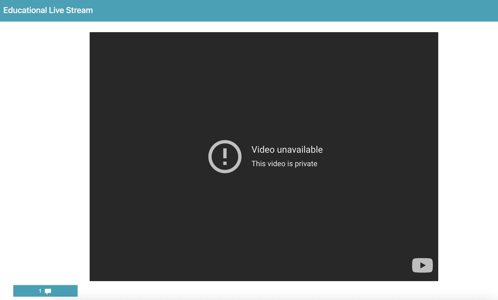

Consent to Participate in Research and Instruction (Streamer)
Title of study: Towards Participatory Educational Live Streaming.
Investigator: Jingchao Fang, Hao-Chuan Wang.
Contact information: If you have any questions about this research, please feel free to contact the investigator at notestruct2020@gmail.com.
Investigator: Jingchao Fang, Hao-Chuan Wang.
Contact information: If you have any questions about this research, please feel free to contact the investigator at notestruct2020@gmail.com.
Introduction
You are being invited to join a research study. If you agree to be in this research, you will be asked to conduct an educational live stream,
monitoring our interface that reflects students’ activities, and participate in an interview with one of the researcher. Your taking part in this research should
take about 40-60 minutes for live streaming, and about 40 minutes for the interview (the interview will be audio-taped). The educational material could be prepared
by yourself, or prepared by researchers upon request.
Taking part in research is completely voluntary. You are free to decline to take part in the project. You can decline to answer any questions and you can stop taking part in the project at any time.
Whether or not you choose to take part, or answer any question, or stop being in the project, there will be no penalty to you or loss of benefits to which
you are otherwise entitled.
Compensation
To thank you for participating in this study and to compensate for your time, you will
receive a $50 Amazon e-gift card.
If you agree to take part in the research, you can save a copy of this page
to keep for future reference. We have included a more detailed overview below. Please click on the
"Accept" button at the end of this page if you agree to participate.
Process, Overview and Instruction
Start to stream
On one screen: 15 min before scheduled time, please join Zoom meeting with the researcher and screen-share your Google Slides.On the other screen: Login to the experiment website, and complete all necessary steps as instructed. You will then see the main page. The main page looks like the screenshot below: 
Please mute the Youtube video player on the interface before you start streaming.
During the live stream
Note that since there is a latency between your side and the Youtube Live, the video will be delayed for about 8s.Below the Youtube video player, there is a green chat button. Upon clicking the button, a chat box will show up at the bottom left corner of the screen.
Note: we expect you to monitor the chat box, however, you do not need to send messages. If you would like to send a message, the GIF below shows you how to set up your name.